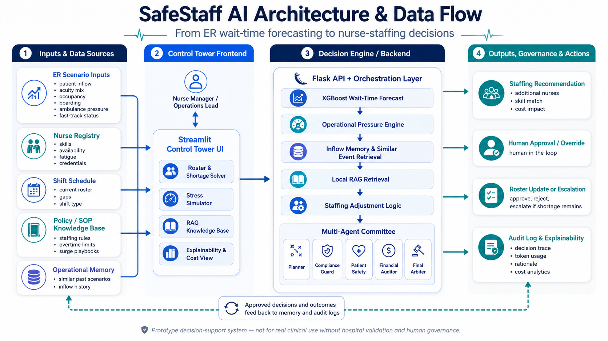

SafeStaff AI
An emergency-department control tower that connects wait-time forecasting, operational pressure signals, nurse-staffing recommendations, human approval, and audit logging.
Created by Wil Low / Draculess99 as a final capstone project for the Google/Kaggle Agentic AI course.
What SafeStaff AI Solves
Emergency departments face connected patient-flow failures: longer waits, rising operational pressure, nurse fatigue, boarding delays, and staffing gaps.
SafeStaff AI treats wait-time forecasting and nurse staffing as one connected workflow, helping decision-makers see when additional coverage may be needed.
Architecture & Data Flow
SafeStaff AI connects operational ER inputs, nurse registry data, shift schedules, policy/SOP grounding, wait-time forecasting, multi-agent review, human approval, roster action, and audit logging into one decision-support control tower.

Architecture view: ER scenario inputs flow through the Streamlit control tower, backend forecast and agentic decision engine, then into human-governed staffing actions with audit-log feedback.
Key Features
Wait-Time Forecasting
Uses XGBoost to estimate ER wait-time risk from operational features.
Staffing Support
Translates wait-time risk and pressure signals into nurse recommendations.
Agentic Workflow
Runs planner, compliance, safety, finance, and final arbiter reasoning.
Human Approval
Keeps supervisors in control before roster changes are accepted.
Audit Logging
Records recommendations, approvals, rejections, overrides, and token mode.
Prototype Guardrails
Supports local deterministic mode and Live Gemini mode with fallback behavior.
How SafeStaff AI Works
The app takes emergency-department scenario inputs, forecasts wait-time risk, applies operational pressure signals, and routes staffing recommendations through a human approval workflow.
Scenario Inputs
Arrival surge, boarding, acuity, call-outs, fatigue, and shift context.
ML Forecast
XGBoost predicts ER wait-time risk.
Pressure Engine
Operational modules adjust the staffing recommendation.
AI Committee
Agents review staffing, safety, compliance, cost, and final decision.
Approval & Audit
Human approves, rejects, or overrides; the decision is logged.
Technology Stack
Why It Matters
SafeStaff AI demonstrates how machine learning and agentic AI can support healthcare operations by connecting wait-time risk, real-world ER pressure, and staffing decisions.